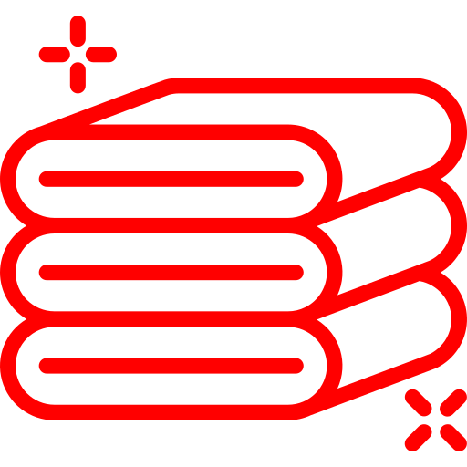

About the apartment
Our apartment is ideally located in a calm neighbourhood in the heart of Cannes city center, within 2min walk from high speed train station and bus shuttle station to airport, within 6min walk of the Festival Palace and beaches, the Casino, rue Meynadier, Forville market and the old sea port.
Whether you are in Cannes for professional reasons or for your holidays, the cozy apartment will satisfy you. It is decorated in a modern and elegant style, and offers all amenities you need for a comfortable vacation or relaxed work environment on the C√¥te d’Azur.
It is 70m¬≤ (750 sqft), can accomodate up to 6 guests (3 beds üõå) and offers:
- large and bright living room with a roof sky window, a 58inch TV, leather sofa/bed, and glass dining table
- 2 bedrooms with king and queen size beds (180cm and 160cm width) – one of which is very large and offers a dedicated desk space with a 25 inch screen to connect your laptop
- fully-equiped kitchen (cutlery and dishes and other ustensils or cookware, fridge, dishwasher, stove, espresso coffee machine, boiler, toaster, microwave, etc.)
- large bathroom
- a balcony
Included
 Bed linen and towels
High speed optical fiber internet
 58" TV, Netflix, Amazon Prime Video
58" TV, Netflix, Amazon Prime Video
Board games, Wii console
Desk with 25 inch screen
Washing machine
Plenty of parking space (street and underground, paid)
 
Maps
Located in city center: High speed train station üöÑ and bus shuttle station üöç to airport üõ´ within 2min walk üö∂‚Äç‚ôÇÔ∏è, 2 supermarkets üõí nearby, forville market at 650m, beaches ‚õ± and festival palace üíÉüé¨ at 200m, main shopping area üí∂üõí (rue d’Antibes) at 500m.
Cannes
There are plenty of reasons to stay in Cannes. Along with its world-famous festivals and professional conferences, the city has a number of cultural sights and beautiful sand beaches, and foodies flock to its markets and restaurants.
Whatever you’re into, here are many reasons to book.
-

Beaches
Most of the popular beaches on Cote d'Azur are found right off La Croisette Boulevard, Cannes' elegant main street. To truly savor the luxurious Côte d'Azur lifestyle, visitors should indulge in seaside dining at one of the enticing gourmet restaurants or outdoor cafés along the Cannes beachfront.
-

The Marché Forville food market
Cannes has some lovely food markets, including the Marché Forville. It’s open for antiques on Mondays, but every other day it’s a great place to taste local delicacies like socca and cooked meat, or buy seasonal fruit and vegetables grown by local farmers.
All of these sites (except the islandsüòâ) can be accessed within a few minutes walk from the apartment.
C√¥te d’Azur
Cannes is located in the region of C√¥te d’Azur. The exception of the landscapes of the region lies in the fact that you can always do activities all year round: ski in winter, via ferrata in spring, river rafting and sea swimming and sun tanning in summer, visit the historical hilltop villages in automn.
You can visit these picturesque sites within a day, while staying at our apartment.
Contact
See you soon!